Лекція 6. Vue.js: Основи роботи з компонентами: v-model, forms, slots.
План лекції:
- Потік даних між компонентами.
- v-model на нативних елементах.
- v-model на компонентах.
- Форми. Стан форми. Компоненти-поля форми.
- Що таке слоти?
- Приклад застосування слотів в компонентах.
Чим для нас, як розробників, добрий Vue?
-
Філософія Vue побудована на максимальному повторюванні вже відомих js-розробнику речей або речей які стануть
стандартом (наприклад vue-компонента це html атрибути).
- HTML first підхід
-
Трансклюзія - передача одного компонента в інший
(концепція slot-ів) - це частина специфікації web-components. Тобто, базування на стандартах - це
круто!
-
Система реактивності, яка перемальовує UI тоді коли треба. Нам не треба думати як буде він
перемальовуватися, не думати о проблемах з performance.
- Computed властивості, watchers (слідкувати за зміною конкретної реактивної властивості).
Чим для нас, як розробників, добрий Vue?
- Tooling - набір інструментів і утиліт, які спрощують розробку, тестування, відлагодження та збірку проектів
на Vue.js.
- Інтеграція Vue застосунку в готовий проект (опитувальник, графік з інтерактивністю на б.я. сторінці
ресурсу).
-
Single-File Component (SFC): template, script and style.
- Vue devtools (https://devtools.vuejs.org/)
- Документація https://ua.vuejs.org/
- Консистентна (узгоджена) і визначена екосистема.
- Фреймворк це інструмент бізнесу.
Tooling
-
Клієнтські інструменти для налаштування проекту (Vue CLI (in Maintenance Mode), Create vue).
Maintenance Mode означає, що більше не буде активного розвитку нових функцій, і фокус переміщено на
виправлення критичних помилок і проблем із безпекою.
Create vue - використовує Vite (https://vite.dev/, https://github.com/vitejs/vite - 67.9k stars).
Vue CLI - використовує webpack - https://github.com/webpack/webpack - 64.6k stars.
- Лінтинг і форматування коду.
- Тестування.
- Розширення для відлагодження (Vue Devtools).
- Інтеграція з системами управління глобальним станом (Vuex, Pinia).
- Інструменти для роботи з маршрутами (Vue Router).
Консистентна і визначена екосистема?
Консистентність (узгодженість)
- Однотипні API та патерни
- Офіційні інструменти
- Стабільність і передбачуваність (підтримка -> оновлення -> сумісність)
Визначеність (структурованість):
- Єдина архітектура (SFC)
- Офіційні рішення для ключових завдань (Vue Router, Vuex / Pinia)
- Чітка документація
Що нам дає консистентна і визначена екосистема?
- Легке навчання і підтримка проектів - чітка структура і взаємодія між інструментами робить Vue
доступним для
нових розробників і зрозумілим для великих команд.
- Мінімізація помилок і конфліктів - використовуючи офіційні інструменти, розробники рідше стикаються з
проблемами сумісності або конфліктів між бібліотеками.
- Прискорена розробка - оскільки багато рішень вже запропоновано і стандартизовано, можна зосередитися
на
написанні бізнес-логіки, а не на налаштуванні інструментів.
Навіщо нам компоненти?
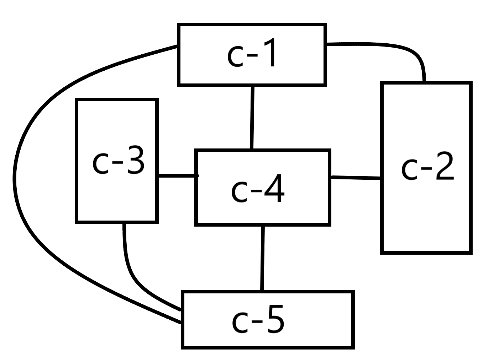
Тепер у компонентів є звязки і ці зв'язки необхідно описати! Тобто які дані
приходять, а які
виходять (props, emits) - описуємо інтерфейс компонента.
Навіщо нам компоненти?
Компоненти, були придумані не для того, щоб знизити складність системи. Вони були придумані для того, щоб
розділити систему на частини і дати можливість описати інтерфейси цих частин.
Інтерфейс - це узгодженість, по якому елементи системи (компоненти), взаємодіють між собою.
Відповідно, кожен компонент описує у світі Vue, що у нього на вході і що в нього на виході.
Такі інтерфейси роблять систему самодокументованою!
Концепція компоненти - спосіб скрити складність.
Перевикористання - це інструмент боротьби зі складністю!
Навіщо нам компоненти?
Реальність на проекті:
- є маленький компонент
- хтось додав фільтр
- хтось додав пагінацію
- хтось додав збереження стану в url
- хтось завіз новий стан в щось
- ... і все компонент виріс!
Тому важливо: навчитися як розбивати і що розбивати!
Умовно кажучи, ми беремо кусочок функціональності і намагаємося її ізолювати.
Навіщо нам компоненти?
Що необхідно далі:
- Дотримуватися консистентності коду по проекту:
<SomeComponentName/>
- PascalCase,
<some-component-name/>
- kebab-case
Чи існують теги в HTML із 2-х слів? "some-compoment" - коли бачимо ось так, то це завжди користувацький
елемент.
-
Привчатись строго типізувати компоненти!
-
Описуйте ваші очікування від подій!
-
Важливо!
Кількість часу яку ви тратите на вирішення б.я. задачі в процесі навчання не є показником! Не треба спішити,
треба свідомо все робити! => Навик не допускати
помилку більше 2-х разів!
Потік даних між компонентами
Принцип: props — вниз, події — вгору. Дочірній компонент не змінює props, а повідомляє батька через emit.
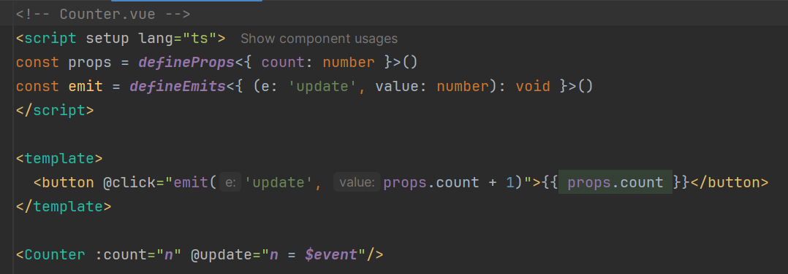
Це «двосторонній зв'язок, зібраний вручну»: :count + @update. Перевага — єдине джерело істини, легко
відлагоджувати. Мутація prop у дочірньому компоненті дає warning; мутація вкладених полів об'єкта-prop технічно
працює, але це антипатерн.
v-model - автоматизує цю пару «prop + подія».
v-model на нативних елементах
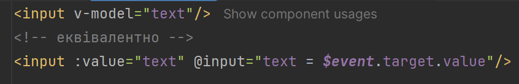
Що саме «під капотом» залежить від елемента:
- text, textarea — prop value, подія input;
- checkbox, radio — prop checked, подія change;
- select — prop value, подія change.
v-model на нативних елементах
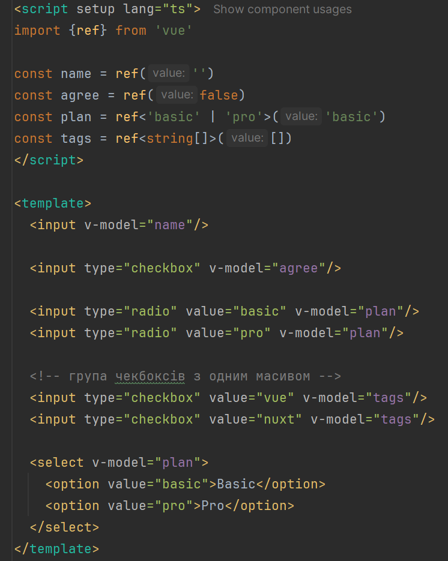
v-model на компонентах
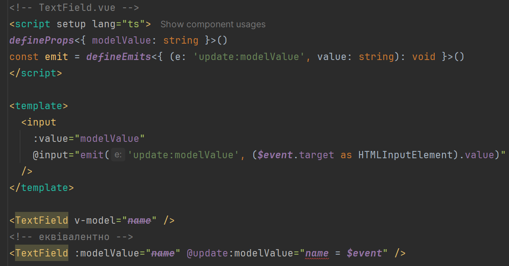
defineModel() (Vue 3.4+)
Макрос прибирає шаблонний код — повертає ref, який синхронізується з батьком:
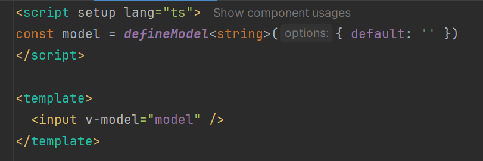
Читання model.value дає значення від батька, запис — емітить update:modelValue. Якщо батько не передав v-model,
компонент працює з локальним станом.
Приклад: QuantityInput
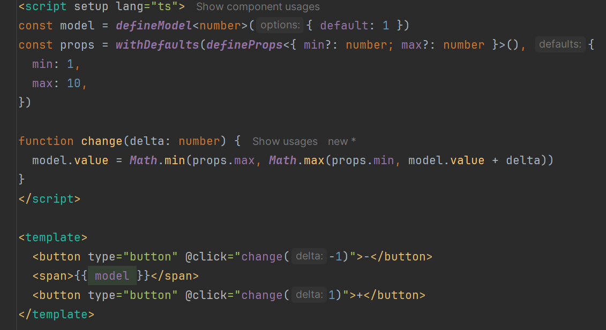
Стан форми
Один типізований об'єкт замість десятка окремих ref:
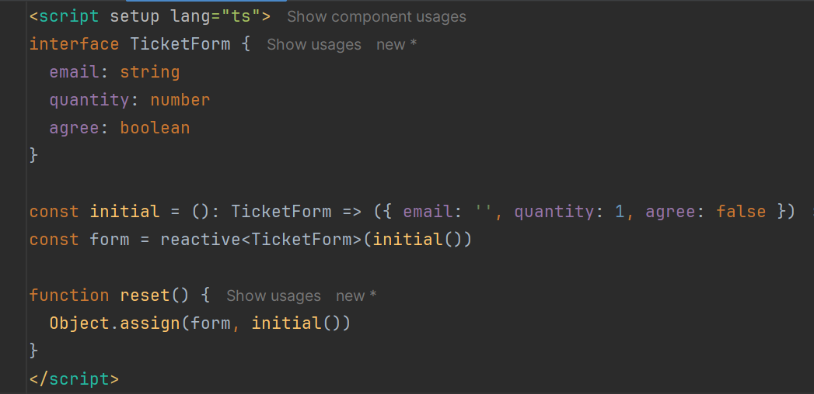
Submit
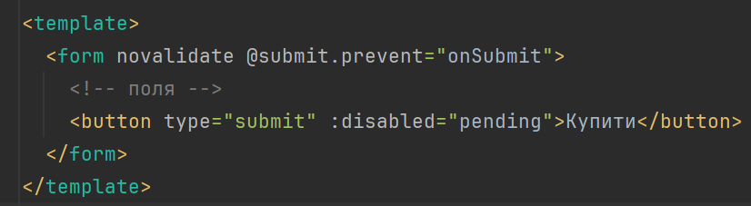
- обробник вішаємо на @submit, а не на @click кнопки — так працює й Enter;
- .prevent скасовує перезавантаження сторінки;
- novalidate вимикає нативні підказки браузера, якщо валідуємо самі.
Валідація через computed
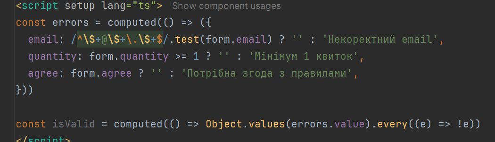
UX-правило: не показувати помилки, поки користувач не взаємодіяв із полем. Для цього зберігають touched
(виставляється на blur) і прапорець submitted (після першої спроби відправки).
Асинхронна відправка
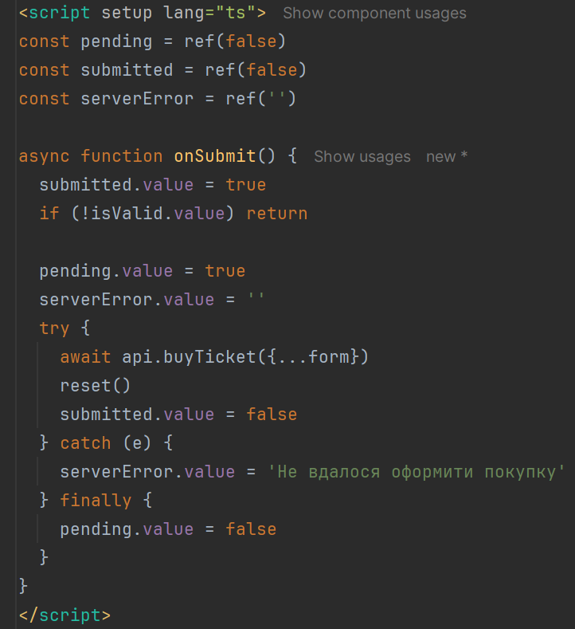
Що таке слоти?
Slot - ключова особливість Vue. У Vue 3 slot є потужною функцією для
створення компонентів і передачі вмісту між
ними.
Слоти дозволяють визначити заповнювач у
шаблоні компонента, який можна заповнити
вмістом із батьківського компонента.
Слоти є потужною функцією у Vue
3, яка дозволяє створювати гнучкі
компоненти для багаторазового
використання. Вони дозволяють
створити більш модульний код і
спрощують керування поведінкою
складних компонентів.
Що таке слоти?
Ми поговоримо про такі типи слотів:
- default slot: Cлоти за замовчуванням дозволяють передавати вміст
до основної області вмісту компонента.
- named slot: Іменовані слоти дозволяють передавати вміст до
певного заповнювача в шаблоні компонента.
- named scoped slot: Іменовані масштабовані слоти дозволяють передавати
дані від батьківського компонента до дочірнього
компонента за допомогою іменованого слота.
-
dynamic slot name: Динамічні слоти дозволяють використовувати
обчислене (динамічне) значення як ім’я слотів